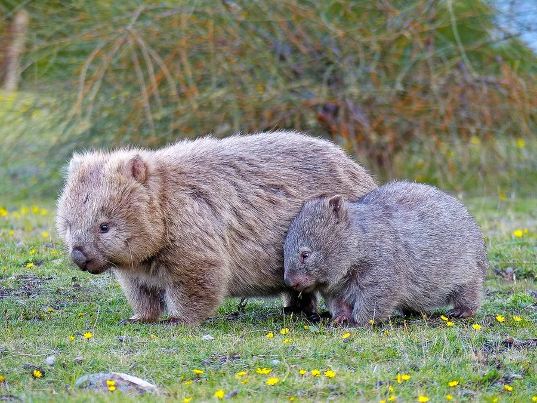

哺乳动物 · 动物界
袋熊 Vombatus ursinus

澳大利亚特有的穴居有袋类，体形敦实如小熊，用强壮的爪挖掘地道，排出的粪便呈独特的立方体，育儿袋向后开口。
- 分类
- 门脊索动物门纲哺乳纲目双门齿目科袋熊科属袋熊属
- 栖息环境
- 澳大利亚东南部的森林、林地、灌丛与山地草坡
- 地理分布
- 澳大利亚东南部、塔斯马尼亚岛及弗林德斯岛
- 保护级别
- IUCN 无危（LC）；局部受疥螨病与路杀威胁
物种志
袋熊体形敦实粗壮，成年体长 90–115 厘米，体重 20–35 千克，四肢短而有力，前肢爪宽大如铲，适合掘土。头部较大，吻部短钝，耳小圆，毛色多为灰褐、沙褐或黑色，皮毛粗糙。它没有明显的尾巴，臀部坚硬，由软骨与骨板加强，遇到危险时会把臀部堵在洞口，让天敌无从下口。
袋熊是澳大利亚特有的有袋类，栖息于森林、林地与灌丛，独居且领域性强，用前爪挖掘长达数十米的地道系统，洞口常设在斜坡上。它主要在夜间活动，以草、根、树皮和真菌为食，消化极慢，食物可在消化道停留超过一周。育儿袋向后开口，可避免掘土时泥土进入。每年繁殖一胎，孕期仅约 20–30 天，幼仔在袋中生活约 6–7 个月。其立方体粪便由肠道不同部位的弹性差异挤压形成，被整齐堆在洞口作为标记。
形态与习性
- 体长约 90–115 cm，体重 20–35 kg
- 食性草、根茎、树皮、苔藓与真菌
- 挖掘地道系统可长达 20–30 m，常有多个出入口
- 繁殖孕期约 20–30 天，幼仔在育儿袋中生活 6–7 个月
- 育儿袋向后开口，防止掘土时泥土落入
- 寿命野外约 15 年，饲养下可达 25 年
- 粪便呈立方体，每块约 2 cm，常堆在洞口或石块上
趣味知识
- 袋熊的粪便是真正的立方体，被一只只码在洞口当作领地标牌。
- 它的育儿袋向后开口，这样挖洞时泥土不会掉进袋里。
- 受惊时袋熊会钻回洞里，用硬得像盾牌的臀部堵住入口。